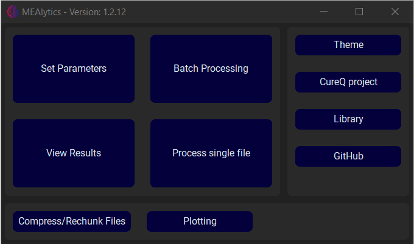
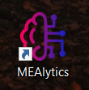

Launching the Graphical User Interface
The graphical user interface is the simplest way to communicate with the library. The GUI can be launched in multiple ways:
Launch from command prompt
Firstly, the GUI can be launched from the command prompt. Simply open the command prompt, and enter “cureq”.
C:\Users>cureq
Successfully launched MEA GUI
The output should look like this, and the GUI should appear on your screen.

Create shortcuts
This process can be simplified by creating shortcuts that in essence perform the same process. In the command prompt, enter “cureq –create-shortcut”.
C:\Users>cureq --create-shortcut
Desktop shortcut created at C:\Users\Desktop\CureQ.lnk
The output should look like this, and a shortcut should appear on your desktop:

If you are on a Windows machine, the shortcut will also be added to the start menu. The shortcut can also be added to the taskbar by pressing “Pin to taskbar”.
Launch from python script
Lastly, the GUI can be launched from a python script. Create a python file and execute the following code:
from CureQ.mea_analysis_tool import MEA_GUI
if __name__ == '__main__':
MEA_GUI()
The GUI should always be opened inside the if __name__ == '__main__' guard. Otherwise, when using multiprocessing, the application will slowly create an infinite amount of processes and crash the application.